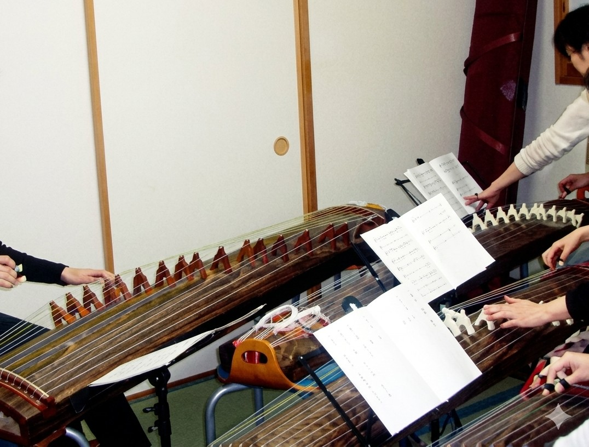
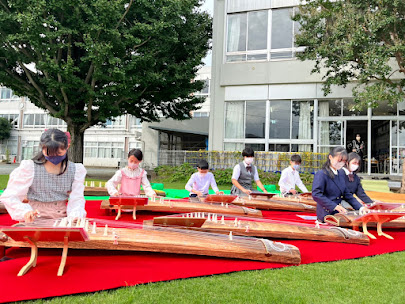
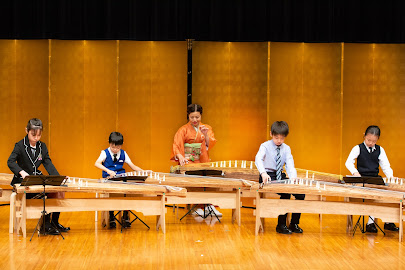
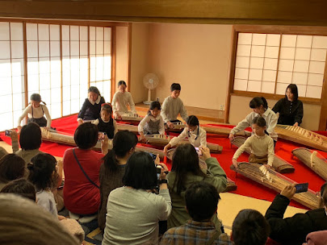
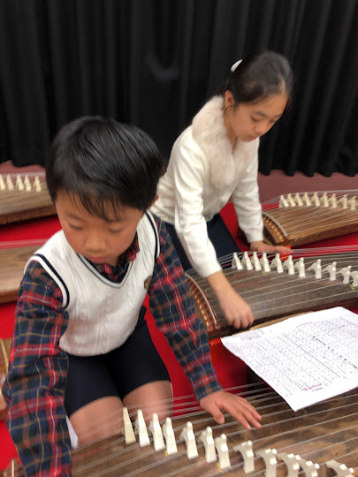

琴・三味線・尺八など日本の伝統楽器の素晴らしさを、
一人でも多くの方に伝えたいという思いでレッスンを行っています。
初心者の方もお気軽にどうぞ。

初心者の方から経験者まで、個々のペースに合わせて丁寧に指導します。 琴の基礎から演奏技術まで、楽しみながら一緒に学んでいきましょう。
こどもから大人まで幅広く受け付けています。 ご要望に応じてカリキュラムを組みますので、まずはお気軽にご相談ください。




小・中学生による元気いっぱいの箏合奏団です。 市内を中心に活動し、仲間と一緒に音楽の楽しさを学びます。
発表会への出演や地域イベントへの参加など、演奏の機会も豊富。 音楽を通じた仲間との絆を大切にしています。
東京都立狛江高校 箏曲部（渡辺正子指導）
全国高等学校総合文化祭日本音楽部門 文化庁長官賞受賞。東京都優秀校として「国立劇場の夏」出場。
現在までに全国大会へ東京都代表として14回出場、うち優良賞11回・文化庁長官賞3回、国立劇場優秀校東京公演に4回出演。